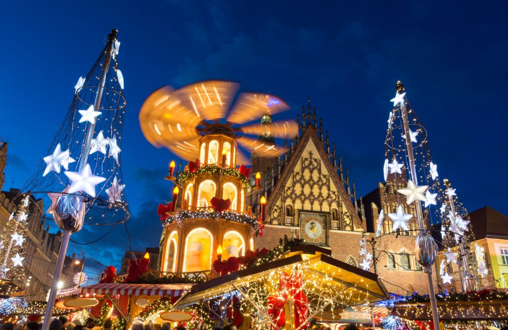

Réveillon du 24 décembre, décorations sur le sapin, dinde aux marrons, calendrier de l’Avent, Père Noël… Si ces mots nous semblent familiers et s’inscrivent dans notre rituel de Noël, d’autres pays cultivent des traditions quelques peu différentes. Breuvages spéciaux, santons originaux, multiples desserts… Suivez-nous à la découverte de quelques traditions de Noël autour du monde !
